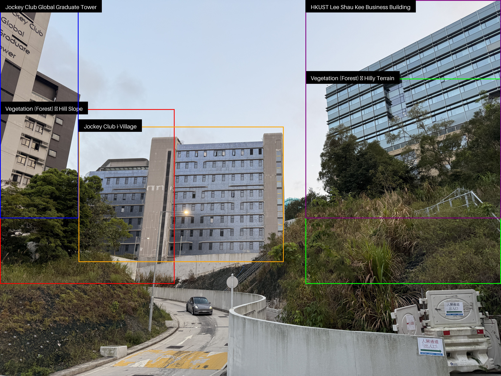
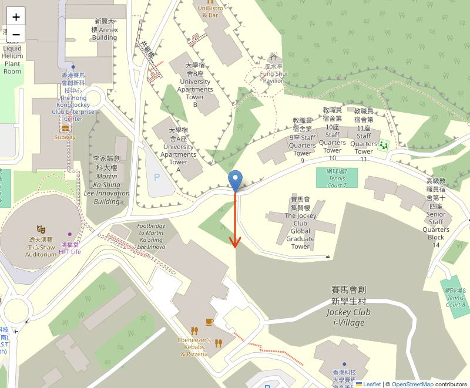
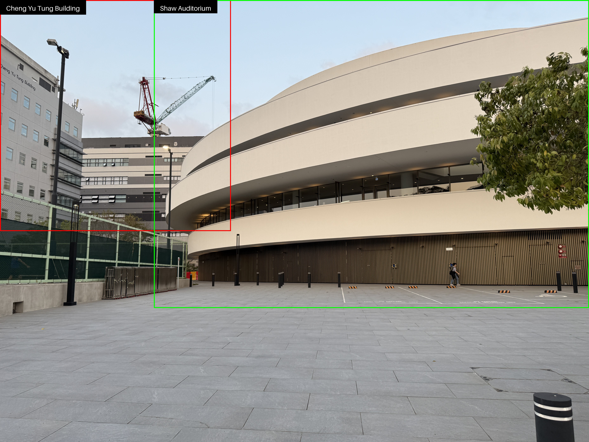
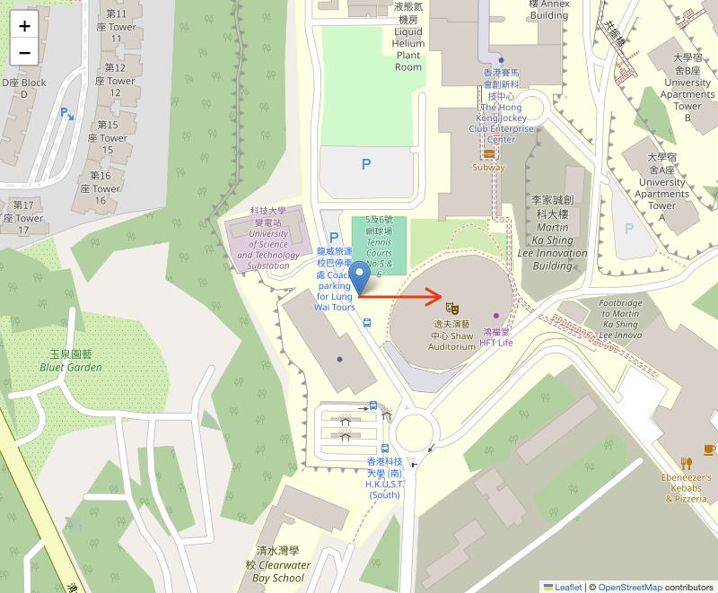
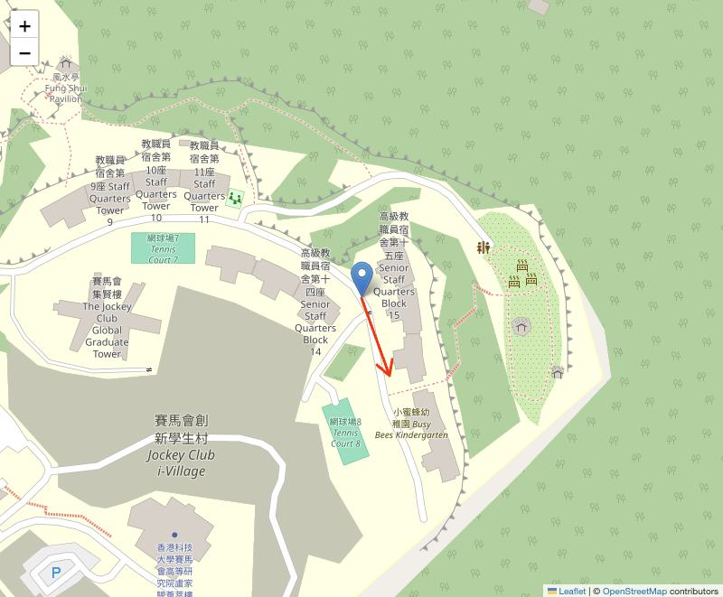
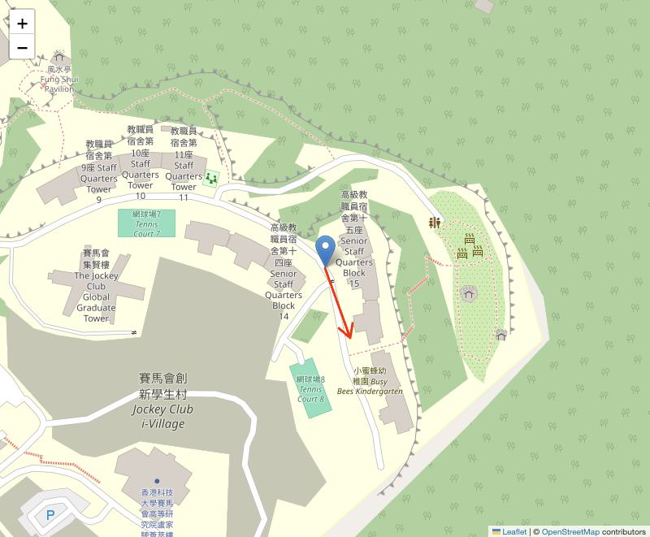
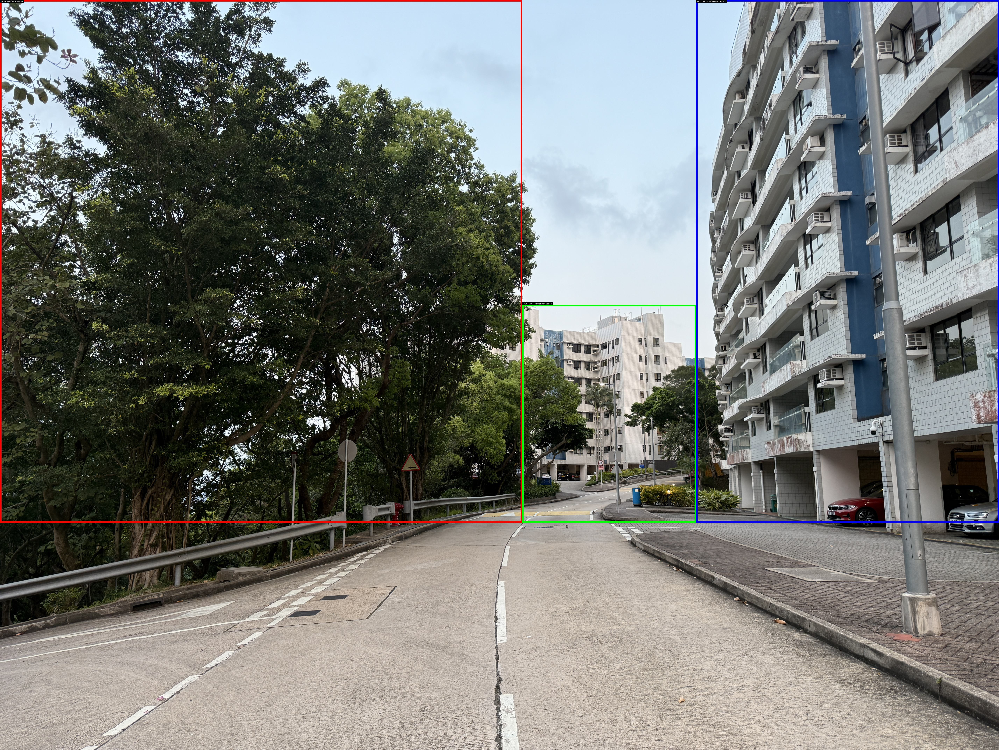
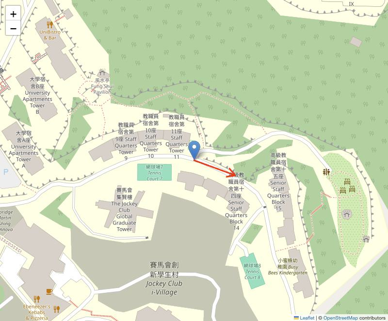
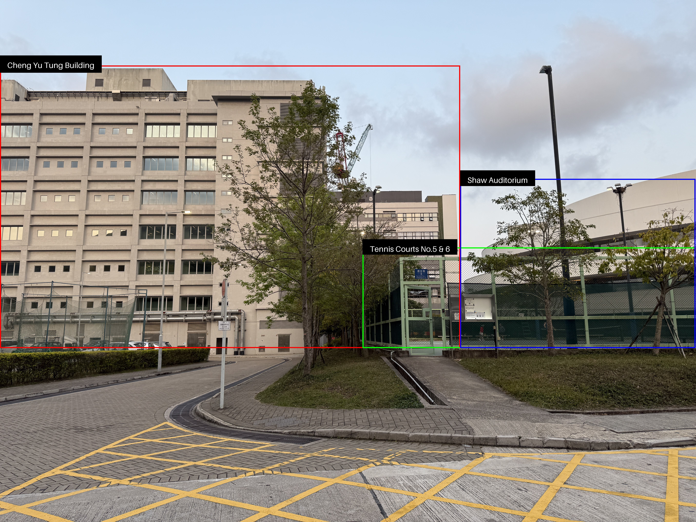
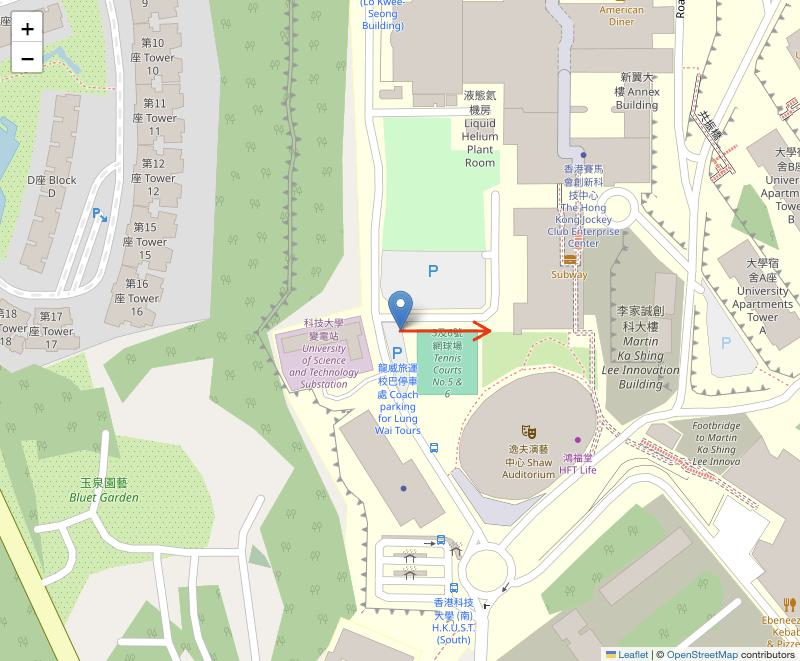

OSM Information Description Evaluation
Instruction
The goal of our model is to match each photo with the corresponding OpenStreetMap (OSM) elements as shown in the GIS map. Therefore, we only focus on OSM objects — those features that can also be observed on the map.
In this evaluation, there are five examples. Each example features two pictures and a corresponding text description:
- Left Picture (Real Photo): Shows the actual scene with bounding boxes drawn around the detected objects.
- Right Picture (GIS Map): Displays the shooting location on a map, with an arrow indicating the direction from which the left photo was taken.
- Picture description: Describes the objects detected in the left photo (with bounding boxes) that can also be observed in the right map.
For each example, please answer the following three questions:
-
How is the amount of labeled or described content?
Check whether all significant obiects in the photo are included and clearly marked, without imporant elements missing or irrelevant items added. -
How accurate is the textual description?
Determine whether each object is described correctly in terms of its appearance, location, or function. -
How accurate are the positions of the image annotations (bounding boxes)?
Assess whether each bounding box is placed correctly around the intended object, accurately reflecting its location and boundaries.
Example 1: Jockey Club Hall


Picture Description:
1. Forest-Covered Hill (Left Side):
Located between the left 70 to left 30-degree angle from our viewpoint, you’ll see a gently sloping hill dressed in lush green vegetation and shrubs. This area adds a beautiful, natural contrast to the man-made structures ahead. The forest appears quite close—just 10 to 30 meters away—creating a serene and calming edge to the scene.
2. Forest Patch on Hilly Terrain (Right Side):
Shifting your gaze now to the right 30 to right 70-degree area, you’ll notice smaller patches of trees and shrubs, resting on undulating, hilly ground. This section of forest feels a bit more scattered and wild compared to the slope on the left. It’s situated slightly farther—around 15 to 50 meters from us—contributing to the layered depth of the landscape.
3. Jockey Club Global Graduate Tower:
Still on the left side, within the 70 to 30-degree viewing angle, stands the Jockey Club Global Graduate Tower. This multi-story residential building is designed to accommodate postgraduate students. With a prominent, structured appearance, it’s located approximately 30 to 50 meters away and rises above the greenery, marking a transition from natural to urban.
4. Jockey Club i-Village:
Moving closer to the center of our view, from left 20 to right 10 degrees, we come across the Jockey Club i-Village. This is a large, multi-story building distinguished by its blue-gray exterior and an array of windows that hint at its residential or institutional use. Positioned about 30 to 50 meters away, its modern design gives it a commanding presence in this part of the scene.
5. HKUST Lee Shau Kee Business Building:
Finally, on the right side between 20 and 70 degrees, we find the Lee Shau Kee Business Building belonging to HKUST. It stands out with its modern glass-panel facade, offering a sleek, contemporary contrast to the forest surrounding it. Nestled among trees, this building is about 30 to 60 meters away, harmonizing technology, business, and nature in one visual frame.
1. Forest-Covered Hill (Left Side):
Located between the left 70 to left 30-degree angle from our viewpoint, you’ll see a gently sloping hill dressed in lush green vegetation and shrubs. This area adds a beautiful, natural contrast to the man-made structures ahead. The forest appears quite close—just 10 to 30 meters away—creating a serene and calming edge to the scene.
2. Forest Patch on Hilly Terrain (Right Side):
Shifting your gaze now to the right 30 to right 70-degree area, you’ll notice smaller patches of trees and shrubs, resting on undulating, hilly ground. This section of forest feels a bit more scattered and wild compared to the slope on the left. It’s situated slightly farther—around 15 to 50 meters from us—contributing to the layered depth of the landscape.
3. Jockey Club Global Graduate Tower:
Still on the left side, within the 70 to 30-degree viewing angle, stands the Jockey Club Global Graduate Tower. This multi-story residential building is designed to accommodate postgraduate students. With a prominent, structured appearance, it’s located approximately 30 to 50 meters away and rises above the greenery, marking a transition from natural to urban.
4. Jockey Club i-Village:
Moving closer to the center of our view, from left 20 to right 10 degrees, we come across the Jockey Club i-Village. This is a large, multi-story building distinguished by its blue-gray exterior and an array of windows that hint at its residential or institutional use. Positioned about 30 to 50 meters away, its modern design gives it a commanding presence in this part of the scene.
5. HKUST Lee Shau Kee Business Building:
Finally, on the right side between 20 and 70 degrees, we find the Lee Shau Kee Business Building belonging to HKUST. It stands out with its modern glass-panel facade, offering a sleek, contemporary contrast to the forest surrounding it. Nestled among trees, this building is about 30 to 60 meters away, harmonizing technology, business, and nature in one visual frame.
Example 2: Shaw Auditorium


Picture Description:
1. Cheng Yu Tung Building:
Off to your left, between the 70 to 30-degree angle, you’ll see the Cheng Yu Tung Building, also known as the Martin Ka Shing Lee Innovation Building. This is a multi-story rectangular structure, immediately recognizable by its sleek grey exterior and clean, geometric lines. The building stands at an approximate distance of 40 to 67 meters, slightly elevated and confidently positioned in the landscape.
2. Shaw Auditorium:
Now shift your attention to the center of the scene, spanning from left 23 to right 53 degrees. Right there is the stunning Shaw Auditorium, a masterpiece of contemporary architecture. It stands out with its smooth white circular design, exuding elegance and openness. It feels quite close—just 20 to 22 meters away—inviting and accessible as a center for performance, gathering, and cultural exchange.
1. Cheng Yu Tung Building:
Off to your left, between the 70 to 30-degree angle, you’ll see the Cheng Yu Tung Building, also known as the Martin Ka Shing Lee Innovation Building. This is a multi-story rectangular structure, immediately recognizable by its sleek grey exterior and clean, geometric lines. The building stands at an approximate distance of 40 to 67 meters, slightly elevated and confidently positioned in the landscape.
2. Shaw Auditorium:
Now shift your attention to the center of the scene, spanning from left 23 to right 53 degrees. Right there is the stunning Shaw Auditorium, a masterpiece of contemporary architecture. It stands out with its smooth white circular design, exuding elegance and openness. It feels quite close—just 20 to 22 meters away—inviting and accessible as a center for performance, gathering, and cultural exchange.
Example 3: Staff Hall 15
 

Picture Description:
1. HKUST Senior Staff Quarters Block 16:
Positioned to your left, between the 70 to 34-degree angle, this is a tall white residential building designed specifically for senior staff. Its clean, vertical structure rises prominently from the surrounding greenery, offering a sense of peaceful retreat while still being part of the larger campus setting.
2. Leisure Garden (Shrubbery and Plants):
Also on the left side within the same 70 to 34-degree field of view, the area surrounding the residential building is complemented by a lush garden space, informally referred to here as the Leisure Garden. This section features shrubbery, plants, and thoughtfully arranged landscaping, creating a calm, inviting foreground.
1. HKUST Senior Staff Quarters Block 16:
Positioned to your left, between the 70 to 34-degree angle, this is a tall white residential building designed specifically for senior staff. Its clean, vertical structure rises prominently from the surrounding greenery, offering a sense of peaceful retreat while still being part of the larger campus setting.
2. Leisure Garden (Shrubbery and Plants):
Also on the left side within the same 70 to 34-degree field of view, the area surrounding the residential building is complemented by a lush garden space, informally referred to here as the Leisure Garden. This section features shrubbery, plants, and thoughtfully arranged landscaping, creating a calm, inviting foreground.
Example 4: Staff Hall 12


Picture Description:
1. Natural Wooded Area (Dense Trees):
Over on the left side, between 70 to 30 degrees, you’ll find a natural cluster of large green trees, forming a soft canopy of foliage that stretches gently above the ground.
2. HKUST Senior Staff Quarters Block 15:
Moving toward the center, from left 10 to right 10 degrees, just beyond the trees, you’ll see Block 15 of the HKUST Senior Staff Quarters. The muted tones of the structures help them blend gently into the surroundings.
3. HKUST Senior Staff Quarters Block 12:
Over to the right, spanning 70 to 10 degrees, stands the Block 12 residential building. This multistory structure features a modern blue and white facade, with visible balconies that suggest a welcoming, lived-in atmosphere.
1. Natural Wooded Area (Dense Trees):
Over on the left side, between 70 to 30 degrees, you’ll find a natural cluster of large green trees, forming a soft canopy of foliage that stretches gently above the ground.
2. HKUST Senior Staff Quarters Block 15:
Moving toward the center, from left 10 to right 10 degrees, just beyond the trees, you’ll see Block 15 of the HKUST Senior Staff Quarters. The muted tones of the structures help them blend gently into the surroundings.
3. HKUST Senior Staff Quarters Block 12:
Over to the right, spanning 70 to 10 degrees, stands the Block 12 residential building. This multistory structure features a modern blue and white facade, with visible balconies that suggest a welcoming, lived-in atmosphere.
Example 5: Tennis Court 5


Picture Description:
1. Cheng Yu Tung Building:
On your left-hand side, spanning from 70 to 30 degrees, you’ll find the Cheng Yu Tung Building—a structure with a beige facade and neatly arranged rectangular windows.
2. Leisure Park:
Moving slightly toward the center, from left 10 to right 50 degrees, your eyes will land on a leisure park—a lush and inviting space perfect for relaxation.
3. Tennis Courts No. 5 & 6:
Right ahead in the center to right portion, between 10 and 40 degrees, we come to the Tennis Courts No. 5 & 6. These are clearly fenced-in recreational courts, with green fencing providing both enclosure and visibility.
4. Shaw Auditorium:
Finally, over to the far right, from 40 to 70 degrees, partially hidden behind trees and fencing, you’ll notice the distinctive shape of the Shaw Auditorium.
1. Cheng Yu Tung Building:
On your left-hand side, spanning from 70 to 30 degrees, you’ll find the Cheng Yu Tung Building—a structure with a beige facade and neatly arranged rectangular windows.
2. Leisure Park:
Moving slightly toward the center, from left 10 to right 50 degrees, your eyes will land on a leisure park—a lush and inviting space perfect for relaxation.
3. Tennis Courts No. 5 & 6:
Right ahead in the center to right portion, between 10 and 40 degrees, we come to the Tennis Courts No. 5 & 6. These are clearly fenced-in recreational courts, with green fencing providing both enclosure and visibility.
4. Shaw Auditorium:
Finally, over to the far right, from 40 to 70 degrees, partially hidden behind trees and fencing, you’ll notice the distinctive shape of the Shaw Auditorium.